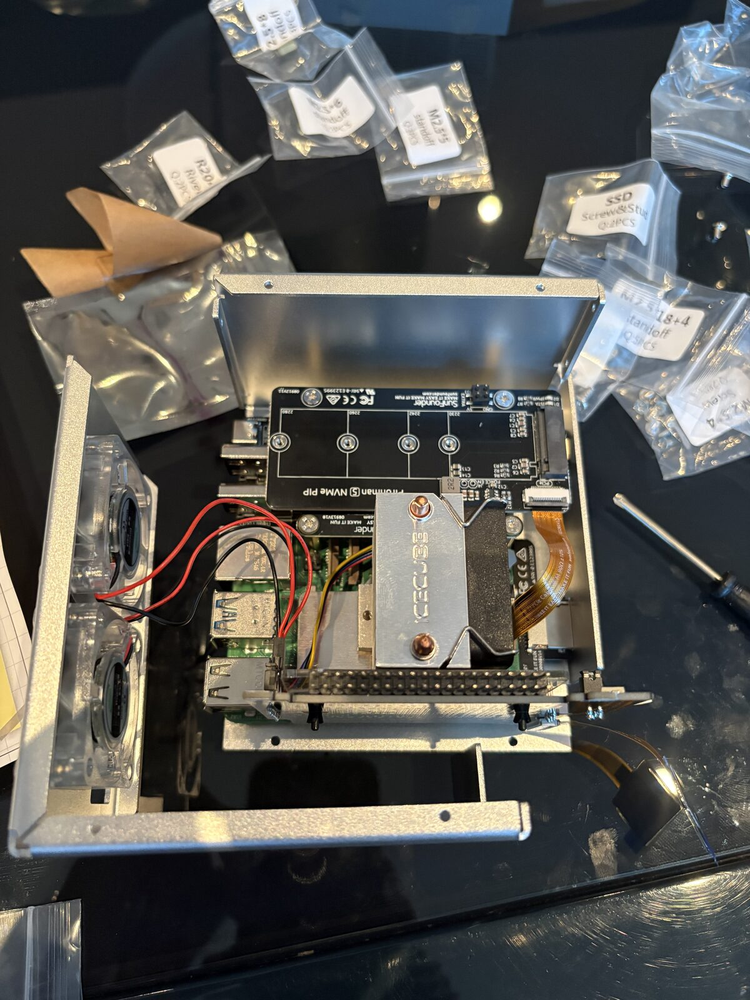
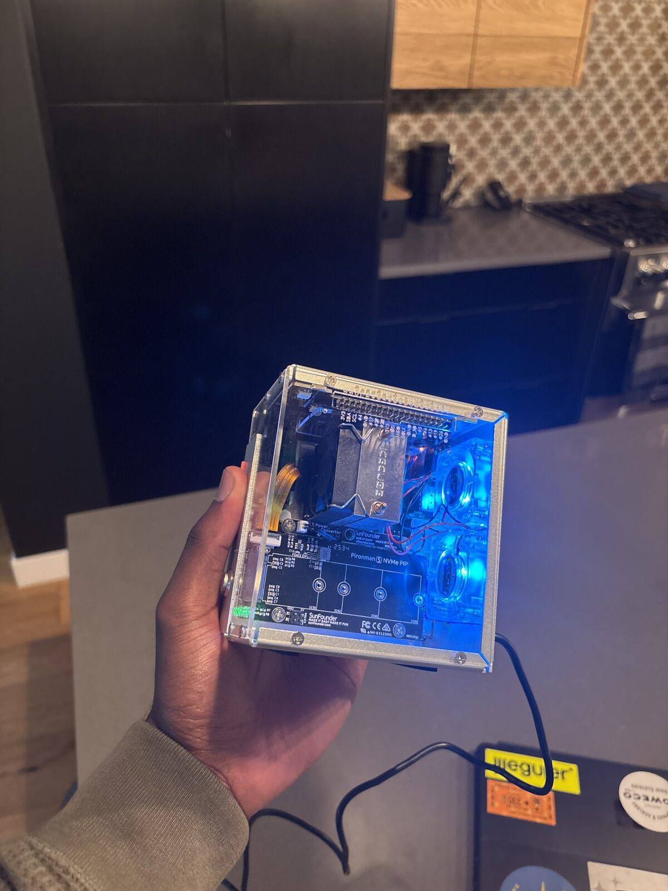
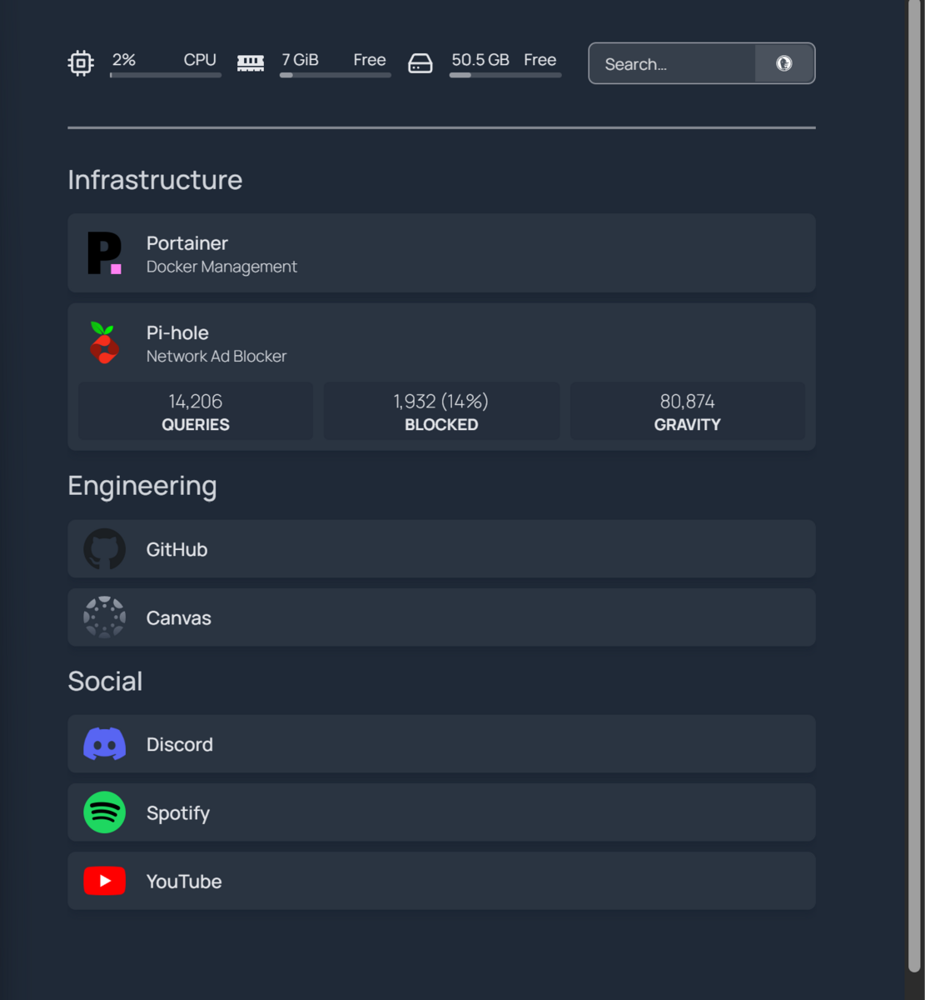

Raspberry Pi 5 Homelab
Self-hosted infrastructure on a Raspberry Pi 5
A Raspberry Pi 5 homelab that runs as a small home server, always on. Instead of using the Pi for just one thing, it hosts several services at once: private cloud storage, network-wide ad blocking, service monitoring, a media server, and a dashboard that ties everything together. It started as a basic setup and grew over time into a proper multi-service server that I can access securely from my other devices, and that my family can use too.
The Pi sits in a Pironman 5 case and runs headless, meaning no keyboard, mouse, or monitor plugged into it. I manage it remotely by SSHing in from my Windows computer through PowerShell. Storage is split across two drives: a microSD card that just holds the operating system, and a 2 TB NVMe SSD mounted at /mnt/storage that holds everything else. Each service gets its own folder there (like /mnt/storage/nextcloud or /mnt/storage/jellyfin/Movies), so the actual data survives even if I rebuild or update a service.
Most services run in Docker instead of being installed directly on the Pi. That keeps each one self-contained, with its own settings, storage, and network config, so they don't interfere with each other even though they're all running on the same device. Portainer gives me a visual dashboard for managing all of it, so I can check on containers, restart something that's acting up, or look at networking without typing out Docker commands every time.
Pi-hole turns the Pi into the DNS server for my whole home network. Normally your devices ask a public DNS server "where do I find this website," but now they ask the Pi first, and it can block ad and tracking domains before the request even leaves the house. Setting this up meant actually learning how DNS works instead of just installing an app and hoping it did something.
Nextcloud is basically a private version of Google Drive, running on the Pi with its files stored on the NVMe drive instead of inside the container. I set it up for more than one person: I made an account for a family member and used Tailscale to let her phone connect securely without opening up any ports to the public internet. That came with a real bug to chase down: her phone had joined a different Tailscale network than the Pi, so they couldn't see each other. Fixing that meant getting both devices onto the same network, then going further and using Tailscale Serve so Nextcloud could be reached over HTTPS instead of a plain IP address and port. That last part meant going into the Nextcloud container and using its occ command-line tool to fix a couple of settings (overwriteprotocol and overwritehost) and add the new address to Nextcloud's trusted-domain list, so it would stop rejecting the requests.
Jellyfin is a media server with its own folders on the NVMe drive for movies, TV, and music, set up the same way as Nextcloud so the files stick around independently of the container. Uptime Kuma keeps an eye on everything and tells me if a service goes down, instead of me finding out by accident later. On top of all that sits a Homepage dashboard, basically a home page listing every service (Portainer, Pi-hole, Uptime Kuma, Nextcloud, plus links out to GitHub and Canvas), so I don't have to remember a bunch of IP addresses and port numbers.
Most of what I actually learned came from debugging things that touched more than one part of the system at once. When Nextcloud worked fine on my own network but failed for someone else's phone, the problem could have been Nextcloud itself, Docker's networking, the home network, Tailscale, the HTTP vs. HTTPS mismatch, the trusted-domain setting, or the phone's own app settings. Working through that list one piece at a time, instead of assuming the first thing I noticed was the actual problem, is honestly the main skill this project taught me.


